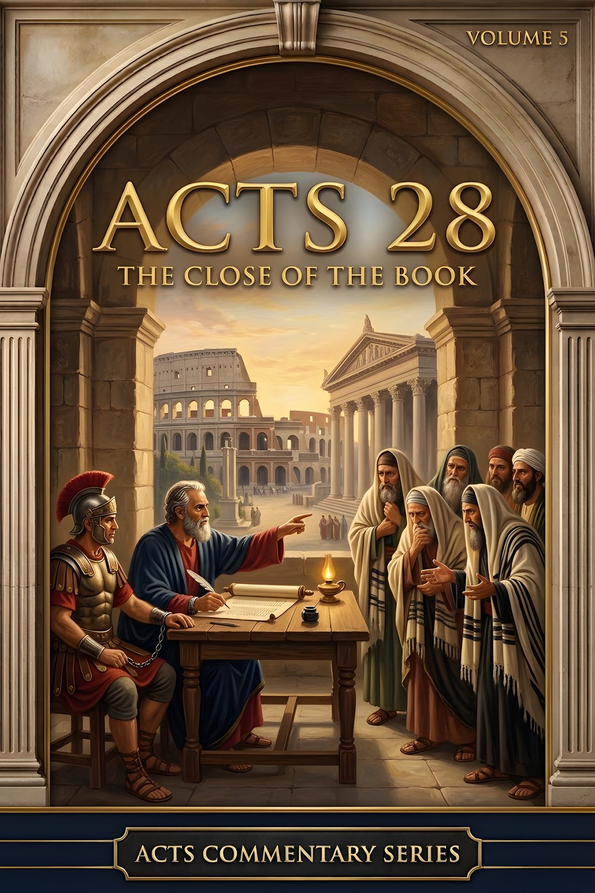
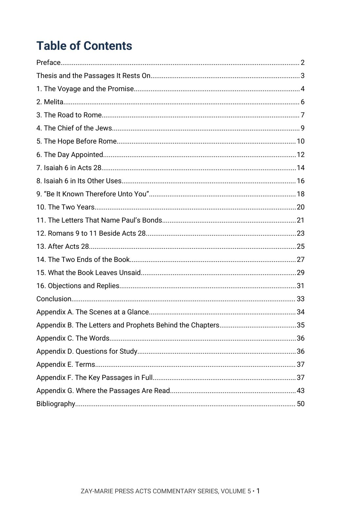
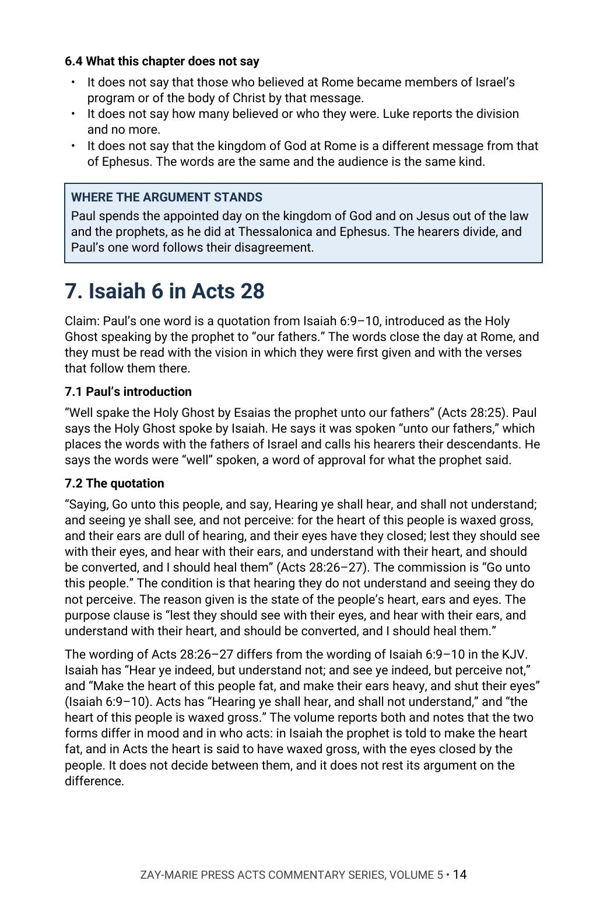
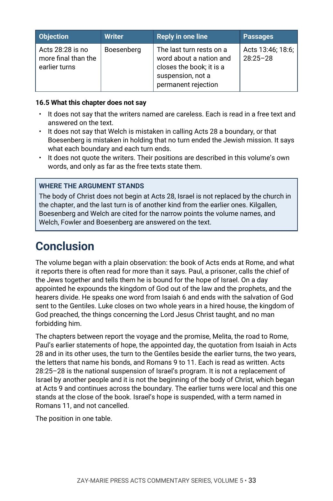

Acts 28
The Close of the Book
What does Acts 28 report, and what does it not report?
At Rome Paul calls the chief of the Jews together, speaks of the hope of Israel, and on a day appointed expounds the kingdom of God. The hearers divide, he speaks one word from Isaiah 6, and he ends: the salvation of God is sent unto the Gentiles. Luke closes on two years in a hired house.
This commentary argues that the chapter reports the national suspension of Israel’s program, that it is neither a replacement of Israel nor the beginning of the body of Christ, and that the book leaves a good deal unsaid. In Chapter 16 it sets its reading beside modern writers who see it differently.
New to the framework? The Digital Studies teach the distinctions this volume relies on. Start with the Digital Studies →
A Commentary That Argues a Position
This volume does not survey how the last chapter of Acts has been read and leave the choice to the reader. It states what the author believes Acts 28 reports, sets out the evidence scene by scene, hears the writers who disagree, and answers them from Scripture.
It is the last of five volumes in the Acts Commentary Series, each of which walks one section of the book in order. It is a different kind of book from the Digital Studies, which report what a passage says. Scripture is quoted from the King James Version throughout, and the writers named in Chapter 16 are described in the volume’s own words. Its own question is narrow: what does Acts 28 report, and what does it not report?
Related Reading
Prophecy & Mystery Commentary, Volume 1 — Israel and the Body Two programs and two identities, argued across the whole canon.
Acts Commentary, Volume 3 — Paul Called and Sent The three accounts of Paul’s call and the sending from Antioch.
Study 21 — Israel’s Judicial Blinding A Digital Study reading the blinding passages as written.
Read first in the Digital Studies:Study 11 — The Beginning of the Body of ChristStudy 14 — Acts 9 and the Beginning of MysteryStudy 4 — Israel and the Body of Christ
From the Voyage to the Close
The Voyage and the Promise
Read Acts 27 and Melita for what Paul is told and what follows, marking what the promise names and what it leaves out.
The Chief of the Jews
Follow Paul’s words to the Jews at Rome, and set them beside his earlier statements of the hope of Israel.
The Day Appointed
Read the day’s exposition and the division among the hearers, noting who believes, who does not, and what Luke says of each.
Isaiah 6 in Its Uses
Trace the quotation in Acts 28, in the Gospels and in John 12, with the verses that follow it in Isaiah.
Three Turns to the Gentiles
Lay Acts 13:46 and 18:6 beside Acts 28:28, asking where each turn is made, to whom, and what follows.
Objections and Replies
Hear modern writers who read the chapter as a boundary, a replacement or no ending at all, and test each reply against the text.
Read the Word in Its Context
Acts 28:20
“For this cause therefore have I called for you, to see you, and to speak with you: because that for the hope of Israel I am bound with this chain.”
Acts 28:23
“And when they had appointed him a day, there came many to him into his lodging; to whom he expounded and testified the kingdom of God, persuading them concerning Jesus, both out of the law of Moses, and out of the prophets, from morning till evening.”
Acts 28:25
“And when they agreed not among themselves, they departed, after that Paul had spoken one word, Well spake the Holy Ghost by Esaias the prophet unto our fathers,”
Acts 28:28
“Be it known therefore unto you, that the salvation of God is sent unto the Gentiles, and that they will hear it.”
Acts 28:30–31
“And Paul dwelt two whole years in his own hired house, and received all that came in unto him, Preaching the kingdom of God, and teaching those things which concern the Lord Jesus Christ, with all confidence, no man forbidding him.”
Acts 13:46
“Then Paul and Barnabas waxed bold, and said, It was necessary that the word of God should first have been spoken to you: but seeing ye put it from you, and judge yourselves unworthy of everlasting life, lo, we turn to the Gentiles.”
Acts 18:6
“And when they opposed themselves, and blasphemed, he shook his raiment, and said unto them, Your blood be upon your own heads; I am clean: from henceforth I will go unto the Gentiles.”
Romans 11:25
“For I would not, brethren, that ye should be ignorant of this mystery, lest ye should be wise in your own conceits; that blindness in part is happened to Israel, until the fulness of the Gentiles be come in.”
What This Book Sets Out to Do
Luke reports the day at Rome, the division, the one word from Isaiah and the two years, and the volume reads each as written and no further.
The volume asks of each scene who speaks, to whom, and what is left unsaid, and keeps what the chapter reports apart from what readers have supplied.
Preview the Volume Before You Purchase
Click any page to enlarge it for reading.


Table of Contents
See the full order of the argument, from the Preface to the Bibliography.



Isaiah 6 in Acts 28
See the method: the quotation read as Paul gives it, beside Isaiah’s own wording.


Objections and Replies
See the modern voices named, and the answer to each.
A Full Commentary on the Close of Acts
51-Page Digital PDF
Cover and a fully numbered interior.
Sixteen Chapters
From the voyage to Rome to the objections and replies.
Objections and Replies
Modern voices named, with each objection answered from the text.
The Close Traced
Acts 27 and 28 read scene by scene, with Isaiah 6 and Romans 9 to 11 set beside them.
Comparison Tables
The turns, the quotations and the passages set side by side.
Conclusion
The position restated in full, with a closing table.
Seven Appendices
The scenes at a glance, the letters and prophets behind the chapters, the words, study questions, terms, nineteen key passages in full and a verse-by-verse index of where the passages are read.
Bibliography
Every work cited, listed by author and title.
Acts 28: The Close of the Book
51-page digital PDF · For personal use